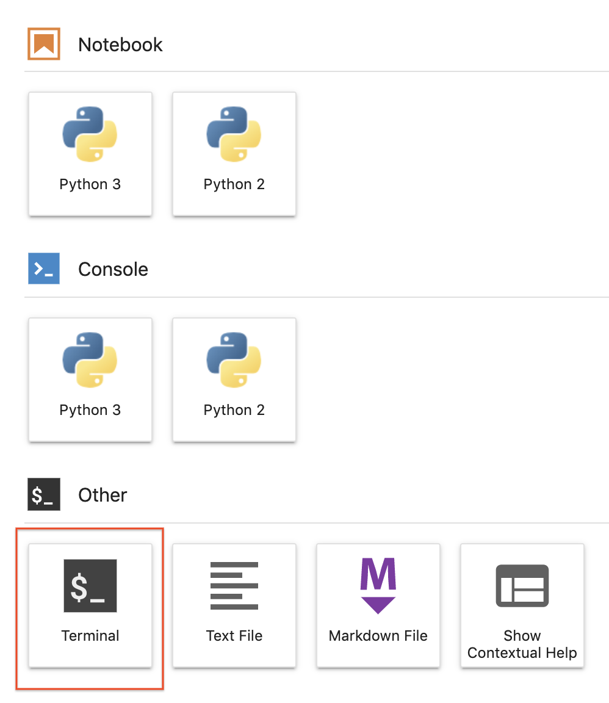

Untuk meng-clone notebook mlops-on-gcp di instance JupyterLab Anda:
Langkah 1
Di JupyterLab, klik ikon Terminal untuk membuka terminal baru.

Langkah 2
Di perintah command-line, ketik perintah berikut, lalu tekan Enter.
Jika repo yang di-clone tidak muncul di UI JupyterLab, Anda dapat menggunakan menu baris atas dan di bawah Git --> Clone a repository, clone repo (https://github.com/GoogleCloudPlatform/mlops-on-gcp) menggunakan UI.
Langkah 3
Konfirmasikan bahwa Anda telah meng-clone repositori dengan cara mengklik direktori mlops-on-gcp dua kali dan memastikan kontennya terlihat. File untuk semua lab yang berbasis notebook Jupyter di seluruh kursus ini tersedia di dalam direktori tersebut.